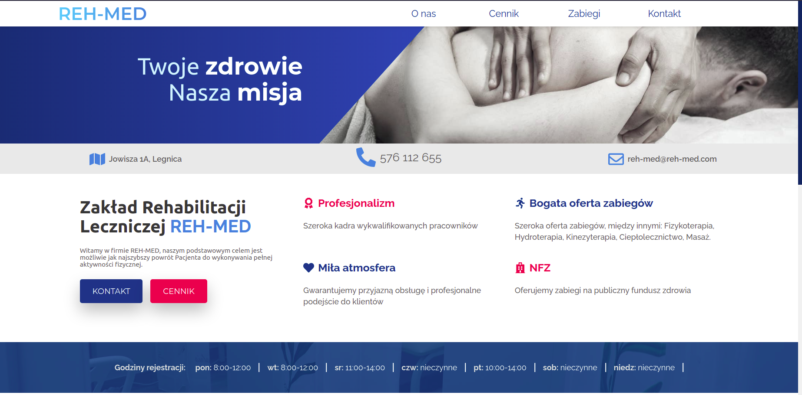

Reh-med
Strona internetowa wykonana dla firmy Reh-med zajmującej się rehabilitacją. Wykonanie: Harp0n
Strona internetowa wykonana dla firmy Reh-med zajmującej się rehabilitacją. Wykonanie: Harp0n
Strona internetowa dla lek. Ślusarczyka zajmującego się medycyną estetyczną . Wykonanie: Harp0n

Projekt medium społecznościowego dla osób ćwiczących na siłowni. Wykonanie: ja i moje ziomki ze studiów.